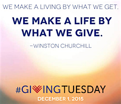
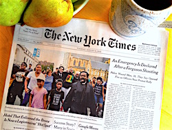
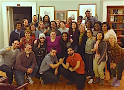
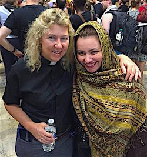

Friends,
It's Giving Tuesday!
Today is Giving Tuesday -- an annual event where people around the world think about the organizations they value and honor them with a special donation.
If you value the work of the Fellowship of Reconciliation, make a Giving Tuesday donation now.
Today we're thinking about the amazing year that we've had due to your support.
This year with your help we were able to
|

FOR Bayard Rustin Fellow Rev. Osagyefo Sekou, on the front page of The New York Times the morning after Ferguson anniversary demonstrations.

Campus Weekend participants learned about the theory and practice of nonviolence earlier this year at FOR's Shadowcliff headquarters.

Rev. Kristin Stoneking and Sahar Alsahlani, FOR National Council Vice-Chair, at the Moral Monday demonstrations in St. Louis.
|
- Train more than 4,500 racial justice activists in nonviolent civil disobedience. We've been on the ground and actively supporting the Black Lives Matter movement in Ferguson, Boston, and Baltimore, and currently we're assisting peaceful protestors in Minneapolis.
- Launch the Campus Weekends pilot program for training a new generation in nonviolent social change. The weekend was a great success as we formed partnerships with faith-based peace and justice programs from eight different college campuses. We are currently preparing for more Campus Weekends in 2016.
- Organize nonviolent civil disobedience Moral Monday actions in St. Louis and Ferguson to commemorate the one-year anniversary of Michael Brown's death. Fifty-seven people were arrested protesting the lack of action by the Department of Justice, including myself and FOR Bayard Rustin Fellow Rev. Osagyefo Sekou, while other FOR staff provided jail support for all arrestees. We also hosted local events with Dr. Cornel West and Bree Newsome.
- Send a delegation of young adults to Japan for crucial demonstrations during the anniversary of the bombing of Hiroshima and Nagasaki. We worked to support Japan FOR's critical advocacy against the militarism of Prime Minister Abe, who is seeking to repeal the constitutional prohibition on a Japanese military force.
- Lead a panel on "Interfaith Perspectives on Nonviolence and Peacemaking" at the Parliament of World Religions. FOR was invited to present the panel to nearly 10,000 participants in Salt Lake City, including many of the world's religious leaders.
- Celebrate 100 years of Persevering FOR Peace with our centennial events in New York City.
Make an impact on Giving Tuesday, without leaving your home
Make a tax-deductible Giving Tuesday donation now, and:
- With just $10, fund the materials for a racial justice activist.
- With just $50, fund a day's participation of a college student at our nonviolence training weekends.
- With just $100, fund the work of jail support during nonviolent actions.
- With just $250, fund FOR staff and allies speaking on faith-based nonviolence and racial justice to diverse audiences.
- With just $500, fund a training led by FOR staff on nonviolent theory and practice.
Celebrate Giving Tuesday with your tax-deductible donation to FOR.
In peace,
 Rev. Kristin Stoneking Rev. Kristin Stoneking
Executive Director
Fellowship of Reconciliation
|